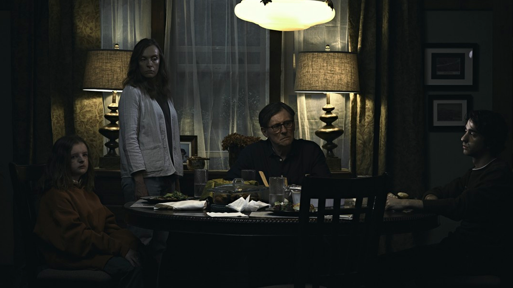

Poco después de la muerte de Ellen Taper Leigh, la matriarca de la familia Graham, su hija Annie, una artista de miniaturas, junto a su esposo Steve, su hijo mayor Peter y su hija menor Charlie, asisten al servicio fúnebre, donde durante su discurso deja en evidencia su distante y disfuncional relación con su madre. Días después Annie frecuenta grupos de terapia para lidiar con el duelo a su manera y a espaldas de su familia, ya que le preocupa la influencia que tenía Ellen sobre Charlie, quien llega a confesarle que su abuela deseaba que ella fuera un varón.
Peter, que quiere ir a una fiesta para divertirse con sus amigos, convence a su madre de darle permiso de ir pero con la condición de llevar a Charlie, muy a pesar de que ambos hermanos no quieren ir juntos. Una vez en la fiesta, Peter deja sola a Charlie para ir a drogarse con algunos de sus compañeros. No obstante, Charlie sufre de un shock anafiláctico cuando consume un pedazo de pastel con nueces y, debido a su alergia, comienza a asfixiarse, para la desesperación de su hermano, que se la lleva apresuradamente a un hospital cercano. Durante el viaje Charlie intenta respirar aire por la ventana, asomando su cabeza en el momento exacto en el que Peter tiene que eludir a un venado muerto en la carretera, lo que provoca que Charlie acabe decapitada al estrellar su cara contra un poste de luz.

Aún asustado y drogado, Peter decide dejar el cuerpo de su hermana muerta en el auto e irse a dormir a su cuarto. Para cuando el cuerpo es descubierto por Annie esto provoca una ruptura en la relación entre el adolescente y su madre, y en los posteriores meses pasan a tener confrontaciones constantes y a eludirse mutuamente.Luego de este suceso, la cotidianeidad de la familia comienza a adentrarse en situaciones paranormales que iran corrompiendo a la familia, la psiquis de Annie y Peter, y descubriran secretos sobre su difunta abuela.
Dani Ardor es una estudiante de psicología traumatizada por el reciente suicidio de su hermana Terri tras el asesinato de sus padres llenando su casa con monóxido de carbono, acabando con sus vidas. El incidente tensa la relación entre Dani y su novio Christian Hughes, estudiante de antropología. En el siguiente verano, la protagonista descubre que Christian y sus amigos, Mark y Josh, han sido invitados por su amigo sueco Pelle, a asistir a una celebración de verano en su comuna ancestral Hårga, en Hälsingland. Como Christian no le había dicho nada sobre el viaje a Dani, se genera una disputa. En un intento de arreglar las cosas, Christian invita a regañadientes a Dani.
El grupo vuela a Suecia y llega a la comuna, donde se encuentran con Simon y Connie, una pareja inglesa invitada por el hermano comunal de Pelle, Ingemar, quien ofrece psilocibina al grupo. Bajo la influencia de la droga, Dani tiene alucinaciones y entra en pánico. Las tensiones aumentan cuando el grupo es testigo de un ättestupa, donde dos ancianos de la comuna cometen senicidio al saltar desde lo alto de un acantilado. Cuando el anciano sobrevive a la caída, los sectarios imitan sus lamentos de agonía y le aplastan el cráneo con un mazo.
Midsommar es un viaje de ida a una comuna pacifica y tranquila, con creencias y rituales que demuestran sus oscuras verdades en las que los protagonistas seran parte de ellas.
Pearl es una chica que vive junto a sus padres en una granja en algún lugar de Estados Unidos en el año de 1918. Ella sueña con mucho ímpetu convertirse algún día en una estrella, ya sea de cine o teatro, su anhelo es ser admirada por todo el mundo, pero todo esto se ve impedido por su situación puesto que vive en la granja con su madre, quien siempre la reprende y la trata con firmeza y su padre, quien sufre de parálisis y no puede hacer nada por sí solo, por lo que siempre debe estar a su cuidado.
A pesar de vivir en una vida relativamente tranquila, el impedimento que siente Pearl por parte de sus padres y de la vida en la granja para lograr el estrellato la han llevado a desarrollar un espectro de emociones psicópatas que la convertirán en una asesina.
Pearl es una pelicula que toma referencias esteticas y de filmacion de "El mago de Oz" y "Lo que el viento se llevo", revercionandolo en un slasher con una protagonista que destapa sus profundos pensamientos y esta dispuesta a lo que sea por llegar al estrellato.